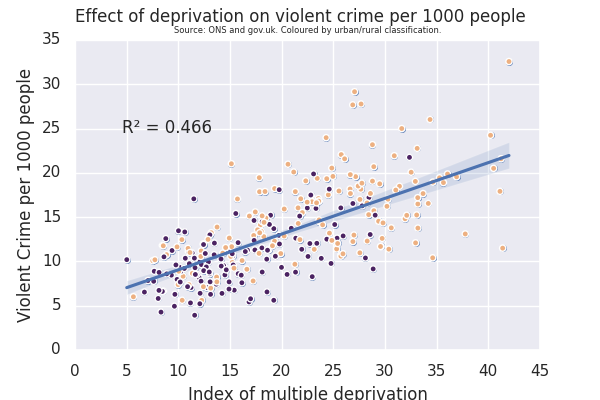

What are the causes of Violent Crime?
Aim:
The aim of my data science project was to show the current landscape of violent crime and which areas in England and Wales experience the highest levels. Then to get some insight into the causes of violent crime such as disparity and alcohol consumption. In my project violent crime is defined as attempted murder, wounding, and assaults.
Project:
I first looked for a correlation between violent crime and population to see whether I would need to control for population when looking for possible causal relationships later in my project.
The graph shows a strong positive relationship with an R^2=0.78 between population and violent crime. Therefore, I will control for population throughout the rest of my project.
To show the big picture and visually highlight which areas have the highest levels of violent crime I next plotted a choropleth graph showing the evolution of violent crime per 1000 people by Community Safety Partnership (CSP) over time (2005-2015).
The graph shows little geographical correlation of areas with higher levels of violent crime however there seems to be a small amount of clustering around cities – particularly London. The areas with the highest level of violent crime are the City of London, Blackpool and Portsmouth (2015).
I theorised that one cause of violent crime was likely the level of deprivation of the area. Having ran this regression in my portfolio, I decided to exclude City of London as it was a huge outlier – likely due to its very small population and the fact it is the capital. This produced a much clearer scatter plot and gave me the idea of colouring the points by their Urban (yellow) or Rural (purple) classification.
Click HERE to view the notebook where I conducted my data analysis
The graph shows positive correlation between deprivation and violent crime with an R^2=0.466. The regression suggested that a 1 percentage point decrease in deprivation gap in a CSP could lead to a 0.4 decrease in violent crimes per 1000 people. The slight clustering of purple dots beneath the regression line and yellow dots above suggested a positive bias for violent crime in urban areas and a negative one for violent crime in rural areas.
I then looked to see whether there was much disparity in violent crime across Police Force Areas (PFAs).
The graph shows a large difference in violent crime per 1000 people across PFAs. The PFAs where violent crime is the highest are Cleveland, West Midlands and West Yorkshire. It would be interesting to see the police force numbers per person and expenditure in these regions however I was unable to find the data.
Finally, I looked at another potential cause of violent crime – alcohol consumption. To do this I found a survey on whether the victim believed that the violent crime they suffered had been influenced by the offender’s consumption of alcohol.
The chart shows a general reduction in crime influenced by alcohol from 2009-2019 however in 2019 42% of violent crimes in England and Wales were still perceived to be due to the influence of alcohol.
Challenges:
I found that there was very limited violent crime data at CSP or Local Authority level in England and Wales. I could only find IMD and urban/rural classification data at the local authority level so to match it to my VC data I had to combine the local authorities into CSP and combine their IMD scores on excel. I used an if function in excel to state rural if “Urban Rural Classification” > 3 and urban if not. Then I labelled them 2 and 1 respectively in the Google Collab Workbook so I could colour them differently on my scatter plot. The original choropleth files I found for CSP and PFAs for England and Wales from statistics.gov.uk were too large to upload to Github and in geojson format. Therefore, I had to use mapshaper.org to carefully simplify the geojson and change it to a topojson for Vega. I had to clean the data for the second and fourth graph using excel so they would match my topojson files. I then used a Google Collab workbook to check the datasets matched exactly. I had to transform the data for the fifth and second graph into long form so vega could read it correctly when I transformed it with the year selector.
Conclusion:
Overall, I found that higher deprivation is likely a cause of increased violent crime and that violent crime is positively skewed in Urban areas and vice versa in Rural areas. I found great disparity in violent crime per 1000 people by PFAs. Finally, that alcohol consumption is perceived to still influence 42% of violent crimes in England and Wales (2019).